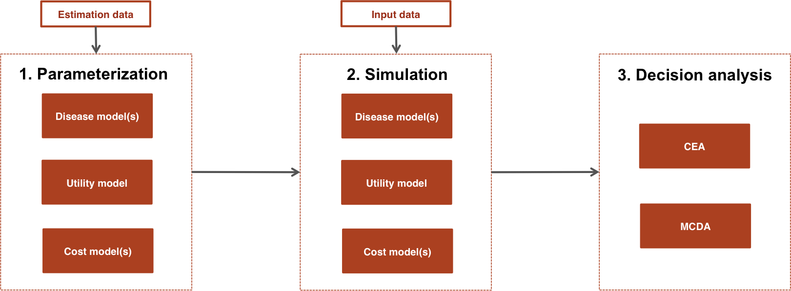
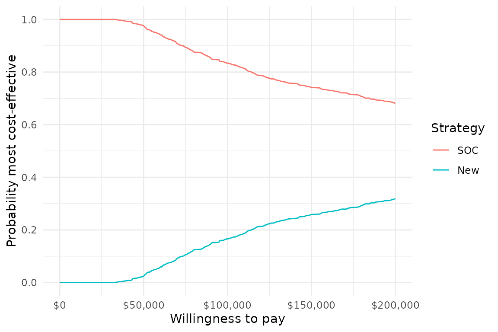

This article provides an overview of the hesim package
and a quick example. The other articles provide more in depth
examples.
hesim supports three types of health economic models:
(i) cohort discrete time state transition models (cDTSTMs), (ii) N-state
partitioned survival models (PSMs), and (iii) individual-level
continuous time state transition models (iCTSTMs). cDTSTMs are Markov
cohort models and can be time-homogeneous or time-inhomogeneous. iCTSTMs
are individual-level simulations that can encompass both Markov and
semi-Markov processes. All models are implemented as R6 classes and have methods
for simulating disease progression, QALYs, and costs.
| Economic model | R6 class |
|---|---|
| N-state partitioned survival model (PSM) |
hesim::Psm
|
| Cohort discrete time state transition model (cDTSTM) |
hesim::CohortDtstm
|
| Individual-level continuous time state transition model (iCTSTM) |
hesim::IndivCtstm
|
Each economic model consists of submodels for disease progression, utility, and costs (usually for multiple cost categories). As shown in the figure, a typical analysis proceeds in a 3-steps:

The entire analysis is inherently Bayesian, as uncertainty in the parameters from the statistical models is propagated throughout the economic model and decision analysis with probabilistic sensitivity analysis (PSA). Furthermore, since the statistical and economic models are integrated, patient heterogeneity can be easily introduced with patient level covariates.
Before beginning an analysis, it is necessary to define the treatment
strategies of interest, the target population, and the model structure.
This can be done in hesim by creating a
hesim_data object with the function
hesim_data(). Integer valued identification (ID) variables
are used to uniquely identify strategies (strategy_id),
patients (patient_id), non-death health-states
(state_id), and (if applicable) health-state transitions
(transition_id). Subgroups can optionally be identified
with grp_id.
Let’s consider an example where we use an iCTSTM to evaluate two competing treatment strategies, the standard of care (SOC) and a New treatment. We will consider a generic model of disease progression with three health states (stage 1, stage 2, and death) with four transitions (stage 1 -> stage 2, stage 2 -> stage 1, stage 1 -> death, and stage 2 -> death). Since we are using an individual-level model, we must simulate a target population that is sufficiently large so that uncertainty reflects uncertainty in the model parameters, rather than variability across simulated individuals. For the sake of illustration, we will create subgroups stratified by sex.
library("hesim")
library("data.table")
# Treatment strategies
strategies <- data.table(strategy_id = c(1, 2),
strategy_name = c("SOC", "New"))
# Patients
n_patients <- 1000
patients <- data.table(patient_id = 1:n_patients,
age = rnorm(n_patients, mean = 45, sd = 7),
female = rbinom(n_patients, size = 1, prob = .51))
patients[, grp_id := ifelse(female == 1, 1, 2)]
patients[, grp_name := ifelse(female == 1, "Female", "Male")]
# (Non-death) health states
states <- data.table(state_id = c(1, 2),
state_name = c("Stage 1", "Stage 2"))
# Transitions
tmat <- rbind(c(NA, 1, 2),
c(3, NA, 4),
c(NA, NA, NA))
colnames(tmat) <- rownames(tmat) <- c("Stage 1", "Stage 2", "Death")
transitions <- create_trans_dt(tmat)
transitions[, trans := factor(transition_id)]
# Combining
hesim_dat <- hesim_data(strategies = strategies,
patients = patients,
states = states,
transitions = transitions)
print(hesim_dat)## $strategies
## strategy_id strategy_name
## 1: 1 SOC
## 2: 2 New
##
## $patients
## patient_id age female grp_id grp_name
## 1: 1 55.34208 1 1 Female
## 2: 2 42.57983 1 1 Female
## 3: 3 38.22928 0 2 Male
## 4: 4 55.80699 0 2 Male
## 5: 5 37.27040 1 1 Female
## ---
## 996: 996 53.27987 0 2 Male
## 997: 997 54.83620 0 2 Male
## 998: 998 38.94842 1 1 Female
## 999: 999 50.83651 0 2 Male
## 1000: 1000 48.98913 0 2 Male
##
## $states
## state_id state_name
## 1: 1 Stage 1
## 2: 2 Stage 2
##
## $transitions
## transition_id from to from_name to_name trans
## 1: 1 1 2 Stage 1 Stage 2 1
## 2: 2 1 3 Stage 1 Death 2
## 3: 3 2 1 Stage 2 Stage 1 3
## 4: 4 2 3 Stage 2 Death 4
##
## attr(,"class")
## [1] "hesim_data"When presenting results, it may be preferable to have more
informative labels that the ID variables. These can be generated from a
hesim_data object using get_labels().
labs <- get_labels(hesim_dat)
print(labs)## $strategy_id
## SOC New
## 1 2
##
## $grp_id
## Female Male
## 1 2
##
## $state_id
## Stage 1 Stage 2 Death
## 1 2 3Each submodel contains fields for the model parameters and the input
data. Models can be parameterized by either fitting statistical models
using R, inputting values directly, or from a combination
of the two. There are two types of parameter objects, standard parameter
objects prefixed by “params” and “transformed” parameter objects
prefixed by “tparams”. The former contain the underlying parameters of a
statistical model and are used alongside the input data to make
predictions. The latter contain parameters more immediate to prediction
that have already been transformed as function of the input data. The
regression coefficients of a logistic regression are an example of a
parameter objects while the predicted probabilities are examples of a
transformed parameter object.
As shown in the table below, the statistical model used to parameterize the disease model varies by the type of economic model. For example, multinomial logistic regressions can be used to parameterize a cDTSTM, a set of N-1 independent survival models are used to parameterize an N-state partitioned survival model, and multi-state models can be used to parameterize an iCTSTM.
| Economic model (R6 class) | Statistical model | Parameter object | Model object |
|---|---|---|---|
hesim::CohortDtstm
|
Custom |
hesim::tparams_transprobs
|
msm::msm
|
hesim::CohortDtstm
|
Multinomial logistic regressions |
hesim::params_mlogit_list
|
hesim::multinom_list
|
hesim::Psm
|
Independent survival models |
hesim::params_surv_list
|
hesim::flexsurvreg_list
|
hesim::IndivCtstm
|
Multi-state model (joint likelihood) |
hesim::params_surv
|
flexsurv::flexsurvreg
|
hesim::IndivCtstm
|
Multi-state model (transition-specific) |
hesim::params_surv_list
|
hesim::flexsurvreg_list
|
The parameters of a survival model are stored in a
params_surv object and a params_surv_list can
be used to store the parameters of multiple survival models. The latter
is useful for storing the parameters of a multi-state model or the
independent survival models required for a PSM. The parameters of a
multinomial logistic regression are stored in a
params_mlogit object and can be created by fitting a model
for each row in a transition probability matrix with
nnet::multinom(). tparams_transprobs objects
are examples of transformed parameter objects that store transition
probability matrices. They can be predicted from a fitted multi-state
model using the msm package or constructed “by hand” in a
custom manner.
We illustrate an example of a statistical model of disease
progression fit with R by estimating a multi-state model
with a joint likelihood using flexsurv::flexsurvreg().
library("flexsurv")
mstate_data <- data.table(mstate3_exdata$transitions)
mstate_data[, trans := factor(trans)]
fit_wei <- flexsurv::flexsurvreg(Surv(years, status) ~ trans +
factor(strategy_id):trans +
age:trans +
female: trans +
shape(trans),
data = mstate_data,
dist = "weibull")State values (i.e., utilities and costs) do not depend on the choice of disease model. They can currently either be modeled using a linear model or with predicted means.
| Statistical model | Parameter object | Model object |
|---|---|---|
| Predicted means |
hesim::tparams_mean
|
hesim::stateval_tbl
|
| Linear model |
hesim::params_lm
|
stats::lm
|
The most straightforward way to construct state values is with
stateval_tbl(), which creates a special object used to
assign values (i.e. predicted means) to health states that can vary
across PSA samples, treatment strategies, patients, and/or time
intervals. State values can be specified either as moments (e.g., mean
and standard error) or parameters (e.g., shape and scale of gamma
distribution) of a probability distribution, or by pre-simulating values
from a suitable probability distribution (e.g., from a Bayesian model).
Here we will use stateval_tbl objects for utility and two
cost categories (drug and medical).
# Utility
utility_tbl <- stateval_tbl(
data.table(state_id = states$state_id,
mean = mstate3_exdata$utility$mean,
se = mstate3_exdata$utility$se),
dist = "beta"
)
# Costs
drugcost_tbl <- stateval_tbl(
data.table(strategy_id = strategies$strategy_id,
est = mstate3_exdata$costs$drugs$costs),
dist = "fixed"
)
medcost_tbl <- stateval_tbl(
data.table(state_id = states$state_id,
mean = mstate3_exdata$costs$medical$mean,
se = mstate3_exdata$costs$medical$se),
dist = "gamma"
)
print(utility_tbl)## state_id mean se
## 1: 1 0.65 0.1732051
## 2: 2 0.85 0.2000000
print(drugcost_tbl)## strategy_id est
## 1: 1 5000
## 2: 2 10000
print(medcost_tbl)## state_id mean se
## 1: 1 1000 10.95445
## 2: 2 1600 14.14214The utility and cost models are always hesim::StateVals
objects, whereas the disease models vary by economic model. The disease
model is used to simulate survival curves in a PSM and health state
transitions in a cDTSTM and iCTSTM.
| Economic model | Disease model | Utility model | Cost model(s) |
|---|---|---|---|
hesim::CohortDtstm
|
hesim::CohortDtstmTrans
|
hesim::StateVals
|
hesim::StateVals
|
hesim::Psm
|
hesim::PsmCurves
|
hesim::StateVals
|
hesim::StateVals
|
hesim::IndivCtstm
|
hesim::IndivCtstmTrans
|
hesim::StateVals
|
hesim::StateVals
|
The submodels are constructed from (i) parameter or model objects and
(ii) input data (if a transformed parameter object is not used). They
can be instantiated using S3 generic methods prefixed by
“create” or with the R6 constructor method
$new(). We illustrate use of the former below.
In all cases, it is necessary to specify the number of parameter samples to use for the PSA.
n_samples <- 1000The disease model is constructed as a function of the fitted
multi-state model (using the stored regression coefficients) and input
data. The input data must be an object of class
expanded_hesim_data, which is a data.table
containing the covariates for the statistical model. In our multi-state
model, each row is a unique treatment strategy, patient, and
health-state transition.
An expanded_hesim_data object can be created by
expanding an object of class hesim_data using
expand.hesim_data().
transmod_data <- expand(hesim_dat,
by = c("strategies", "patients", "transitions"))
head(transmod_data)## strategy_id patient_id transition_id strategy_name age female grp_id
## 1: 1 1 1 SOC 55.34208 1 1
## 2: 1 1 2 SOC 55.34208 1 1
## 3: 1 1 3 SOC 55.34208 1 1
## 4: 1 1 4 SOC 55.34208 1 1
## 5: 1 2 1 SOC 42.57983 1 1
## 6: 1 2 2 SOC 42.57983 1 1
## grp_name from to from_name to_name trans
## 1: Female 1 2 Stage 1 Stage 2 1
## 2: Female 1 3 Stage 1 Death 2
## 3: Female 2 1 Stage 2 Stage 1 3
## 4: Female 2 3 Stage 2 Death 4
## 5: Female 1 2 Stage 1 Stage 2 1
## 6: Female 1 3 Stage 1 Death 2The disease model is instantiated using the
create_IndivCtstmTrans() generic method. Parameters for the
PSA are, by default, drawn from the multivariate normal distribution of
the maximum likelihood estimate of the regression coefficients, although
we make this explicit with the uncertainty argument.
transmod <- create_IndivCtstmTrans(fit_wei, transmod_data,
trans_mat = tmat, n = n_samples,
uncertainty = "normal")
class(transmod)## [1] "IndivCtstmTrans" "CtstmTrans" "R6"Since we are using predicted means for utilities and costs, we do not
need to specify input data. Instead, we can construct the utility and
cost models directly from the stateval_tbl objects.
# Utility
utilitymod <- create_StateVals(utility_tbl, n = n_samples, hesim_data = hesim_dat)
# Costs
drugcostmod <- create_StateVals(drugcost_tbl, n = n_samples, hesim_data = hesim_dat)
medcostmod <- create_StateVals(medcost_tbl, n = n_samples, hesim_data = hesim_dat)
costmods <- list(drugs = drugcostmod,
medical = medcostmod)Once the disease, utility, and cost models have been constructed, we
combine them to create the full economic model using
$new().
ictstm <- IndivCtstm$new(trans_model = transmod,
utility_model = utilitymod,
cost_models = costmods)Each economic model contains methods (i.e., functions) for simulating disease progression, QALYs, and costs.
| Economic model (R6 class) | Disease progression | QALYs | Costs |
|---|---|---|---|
hesim::CohortDtstm
|
$sim_stateprobs() | $sim_qalys() | $sim_costs() |
hesim::Psm
|
$sim_survival() and $sim_stateprobs() | $sim_qalys() | $sim_costs() |
hesim::IndivCtstm
|
$sim_disease() and $sim_stateprobs() | $sim_qalys() | $sim_costs() |
Although all models simulate state probabilities, they do so in different ways. The cDTSTM uses discrete time Markov chains, the PSM calculates differences in probabilities from simulated survival curves, and the iCTSTM aggregates individual trajectories simulated using random number generation. The individual-level simulation is advantageous because it can be used for semi-Markov processes where transition rates depend on time since entering a health state (rather than time since the start of the model).
The utility and cost models always simulate QALYs and costs from the
simulated progression of disease with the methods
$sim_qalys() and $sim_costs(), respectively.
In the cohort models, QALYs and costs are computed as a function of the
state probabilities whereas in individual-level models they are based on
the simulated individual trajectories. Like the disease model, the
individual-level simulation is more flexible because QALYs and costs can
depend on time since entering the health state.
We illustrate with the iCTSTM. The first step is to simulate disease progression for each patient.
ictstm$sim_disease()
head(ictstm$disprog_)## sample strategy_id patient_id grp_id from to final time_start time_stop
## 1: 1 1 1 1 1 2 0 0.000000 1.162336
## 2: 1 1 1 1 2 3 1 1.162336 1.945734
## 3: 1 1 2 1 1 3 1 0.000000 13.571152
## 4: 1 1 3 2 1 2 0 0.000000 1.335098
## 5: 1 1 3 2 2 1 0 1.335098 4.763078
## 6: 1 1 3 2 1 3 1 4.763078 13.305261The disease trajectory is summarized with
$sim_stateprobs().
## sample strategy_id grp_id state_id t prob
## 1: 1 1 1 1 0 0.497
## 2: 1 1 1 1 1 0.450
## 3: 1 1 1 1 2 0.396
## 4: 1 1 1 1 3 0.357
## 5: 1 1 1 1 4 0.323
## 6: 1 1 1 1 5 0.308Finally, we compute QALYs and costs (using a discount rate of 3 percent).
# QALYs
ictstm$sim_qalys(dr = .03)
head(ictstm$qalys_)## sample strategy_id grp_id state_id dr qalys lys
## 1: 1 1 1 1 0.03 3.9286994 4.9738952
## 2: 1 1 1 2 0.03 1.0523911 1.0836460
## 3: 1 1 2 1 0.03 3.9642688 5.0189275
## 4: 1 1 2 2 0.03 0.8808635 0.9070241
## 5: 1 2 1 1 0.03 3.7281270 4.7199623
## 6: 1 2 1 2 0.03 0.7757178 0.7987558
# Costs
ictstm$sim_costs(dr = .03)
head(ictstm$costs_)## sample strategy_id grp_id state_id dr category costs
## 1: 1 1 1 1 0.03 drugs 24869.476
## 2: 1 1 1 2 0.03 drugs 5418.230
## 3: 1 1 2 1 0.03 drugs 25094.637
## 4: 1 1 2 2 0.03 drugs 4535.121
## 5: 1 2 1 1 0.03 drugs 47199.623
## 6: 1 2 1 2 0.03 drugs 7987.558Once output has been simulated with an economic model, a decision
analysis can be performed. CEAs can be conducted using other
R packages such as BCEA
or directly with hesim.
To perform a CEA, simulated QALYs and costs are summarized and a
ce object is created, which contains mean QALYs and costs
for each sample from the PSA by treatment strategy. QALYs and costs can
either be summarized by subgroup (by_grp = TRUE) or
aggregated across all patients (by_grp = FALSE).
ce <- ictstm$summarize(by_grp = FALSE)
print(ce)## $costs
## category dr sample strategy_id costs grp_id
## 1: drugs 0.03 1 1 59917.46 1
## 2: drugs 0.03 1 2 118997.27 1
## 3: drugs 0.03 2 1 52653.59 1
## 4: drugs 0.03 2 2 102497.75 1
## 5: drugs 0.03 3 1 51748.42 1
## ---
## 5996: total 0.03 998 2 114960.12 1
## 5997: total 0.03 999 1 56535.40 1
## 5998: total 0.03 999 2 121227.10 1
## 5999: total 0.03 1000 1 70535.25 1
## 6000: total 0.03 1000 2 116455.52 1
##
## $qalys
## dr sample strategy_id qalys grp_id
## 1: 0.03 1 1 9.826223 1
## 2: 0.03 1 2 9.691231 1
## 3: 0.03 2 1 10.158460 1
## 4: 0.03 2 2 9.874973 1
## 5: 0.03 3 1 6.596712 1
## ---
## 1996: 0.03 998 2 8.819972 1
## 1997: 0.03 999 1 6.462212 1
## 1998: 0.03 999 2 7.583241 1
## 1999: 0.03 1000 1 8.944380 1
## 2000: 0.03 1000 2 8.119533 1
##
## attr(,"class")
## [1] "ce"The functions cea() and cea_pw() are used
to perform a CEA. The former simultaneously accounts for all treatment
strategies while the latter makes pairwise comparisons between
interventions and a chosen comparator.
cea_out <- cea(ce, dr_qalys = .03, dr_costs = .03)
cea_pw_out <- cea_pw(ce, dr_qalys = .03, dr_costs = .03, comparator = 1)Summary and plotting functions are available to analyze the output.
For instance, we can use plot_ceac() to quickly plot a
cost-effectiveness acceptability curve (CEAC), which displays the
probability that each treatment strategy is the most cost-effective at a
given willingness to pay for a QALY. The labels we constructed earlier
are used to give the treatment strategies informative names.
library("ggplot2")
plot_ceac(cea_out, labels = labs) +
theme_minimal()
This article provided an overview of the hesim package.
We recommend exploring the examples in the other articles to learn
more.
cDTSTMs (i.e., Markov cohort models) are probably the most commonly
used models in health economics and there are examples demonstrating
multiple ways to build them with hesim. One approach that
has not yet been discussed is a functional one that allows users to
define a model (with define_model()) in terms of
expressions that transform underlying parameter draws from a PSA into
relevant transformed parameters (e.g., transition probability matrices,
mean state values) as a function of input data.
Other relevant topics include more through treatments of CEA, multi-state modeling, individual-level simulations based on aggregate data, and partitioned survival analysis. As the examples illustrate, any analysis can be performed either for a single group or in the context of multiple subgroups.